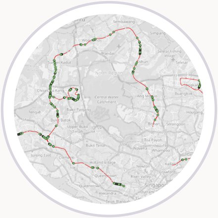
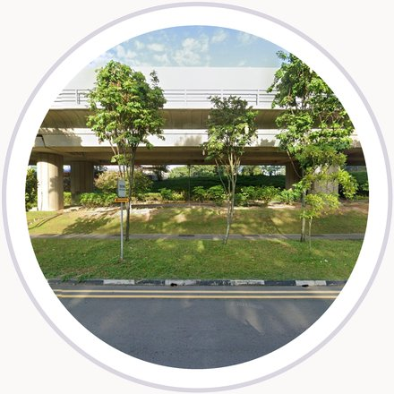
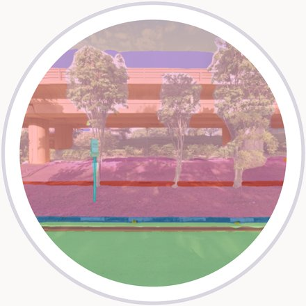
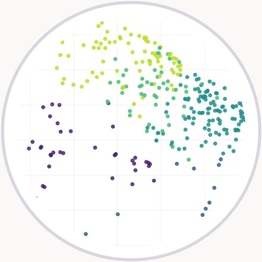
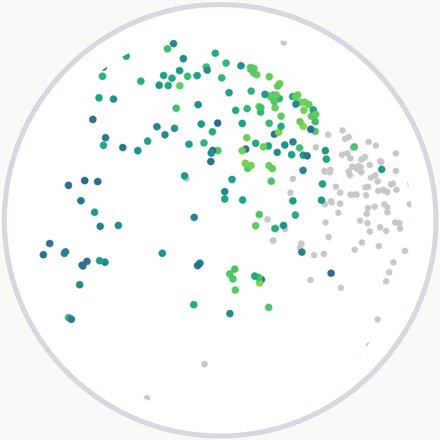
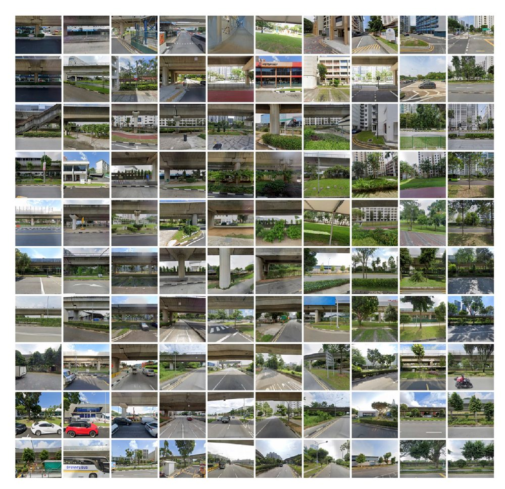
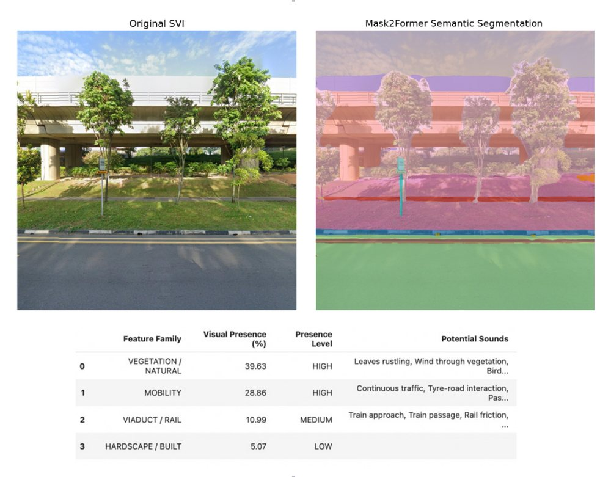
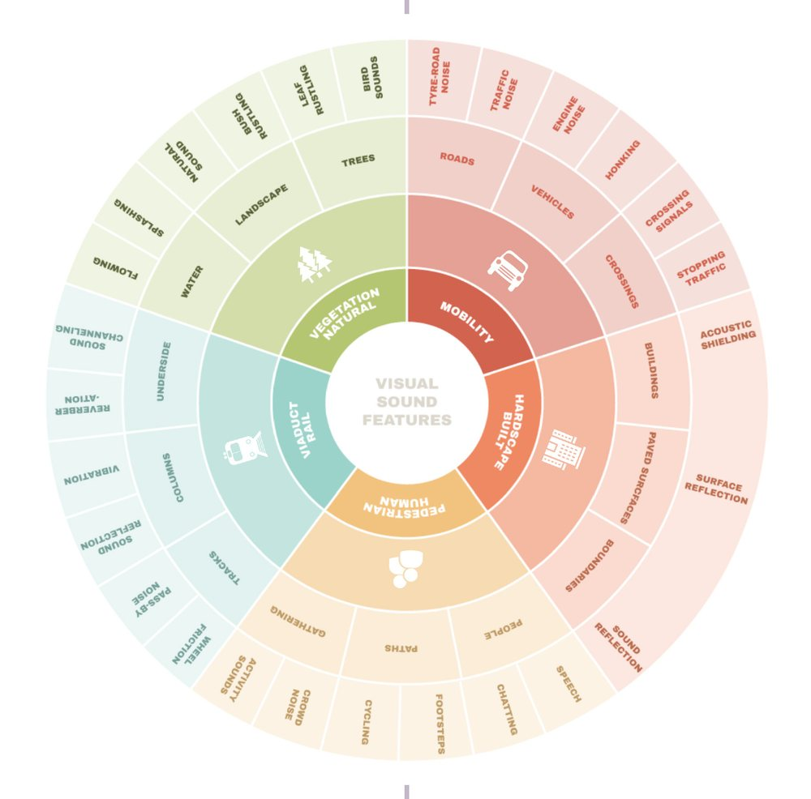
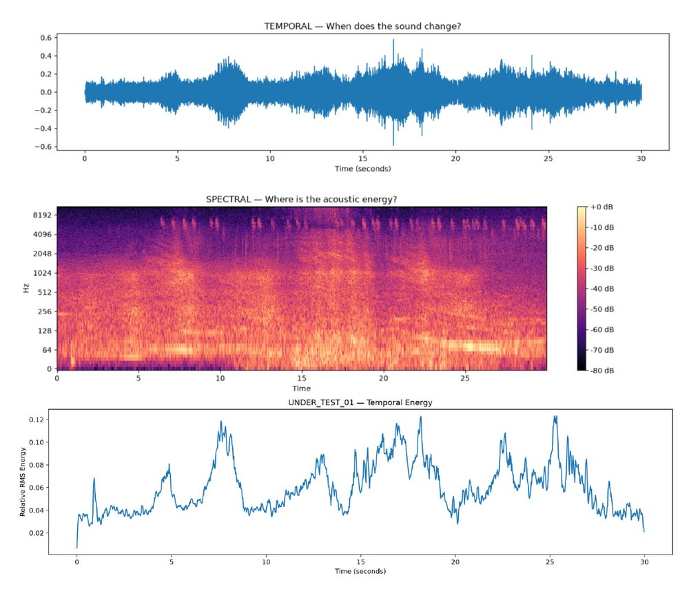

AR5801 | SEMESTER 1 AY2026/2027
METHOD
How the search workflow finds, describes and interprets the spaces beneath Singapore's elevated rail.
The project reads street-level images to understand what each space is like, infers the sounds it is likely to hold, and uses that evidence to decide where and how to intervene.
THE SEARCH WORKFLOW
From hundreds of images to two design cases
Seven steps in three phases move from locating every space under the elevated rail to developing architectural responses.
PHASE 1 IDENTIFY AND DESCRIBE
-

01 IDENTIFY
Locate UNDER environments across Singapore
GIS + Rail + Pedestrian
Rail lines and pedestrian routes are mapped together to place sample points along walkways beneath the elevated MRT and LRT tracks.
-

02 COLLECT
Retrieve and screen Street View images
Street View images
A street-level image is retrieved at each point and screened for usable views of the space under the viaduct; 299 images were kept.
-

03 QUANTIFY
Measure environmental composition
Semantic segmentation
A Mask2Former model (Swin-Large, trained on Mapillary Vistas) labels every pixel. Labels are grouped into natural, mobility, rail, built and people shares of the image.
PHASE 2 CATEGORIZE AND PRIORITIZE
-

04 CATEGORIZE
Group similar visual environments
K-means clustering
Images with similar composition profiles are grouped into visual clusters, such as natural-dominant or built-dominant environments.
-

05 EVALUATE
Evaluate acoustic opportunity and spatial feasibility
Acoustic challenge and spatial feasibility
Sites are scored for acoustic challenge and spatial feasibility, so attention goes where an intervention is both needed and possible.
PHASE 3 INTERPRET AND GENERATE
-
06 INTERPRET
Define acoustic objectives and user activities
Design rules R1 / R2 / R3
Contextual types and design rules translate the findings into acoustic objectives (protect, recompose, gather) and operations: filter, introduce, react, transform and amplify.
-
07 GENERATE
Develop multiple architectural alternatives
Barrier, Sequence and Gather systems
Three prototype families respond to the objectives. Case 53 develops the Barrier family and Case 437 the Sequence family.
See the search evidence for Cases 53 and 437 and listen to the results
DERIVING URBAN SOUNDSCAPES FROM SVI
What does the urban environment tell us about the soundscape?
A closer look at how a street view image (SVI) becomes a listening scenario. Methodology adapted from Zhao et al. (2023), Sensing urban soundscapes from street view imagery.
-
1 SVI

Collect georeferenced street-level imagery
Each image records what a pedestrian sees at one sample point.
-
2 SEMANTIC SEGMENTATION

Extract and quantify urban visual features
For Case 53: vegetation and natural 39.63%, mobility 28.86%, viaduct and rail 10.99%, hardscape and built 5.07%.
-
3 SOUND SOURCE

Associate visual features with likely sound sources
Vegetation suggests leaves rustling and birds; mobility suggests continuous traffic and tyre and road interaction; viaduct and rail suggest train approach, passage and rail friction.
-
4 SOUNDSCAPE AUDIO

Reconstruct a site-specific acoustic scenario
Likely sources are layered into a synthetic scenario and read through its waveform (when the sound changes), spectrogram (where the energy is) and temporal energy.
Try a simplified version of steps 2 to 4 with your own photo